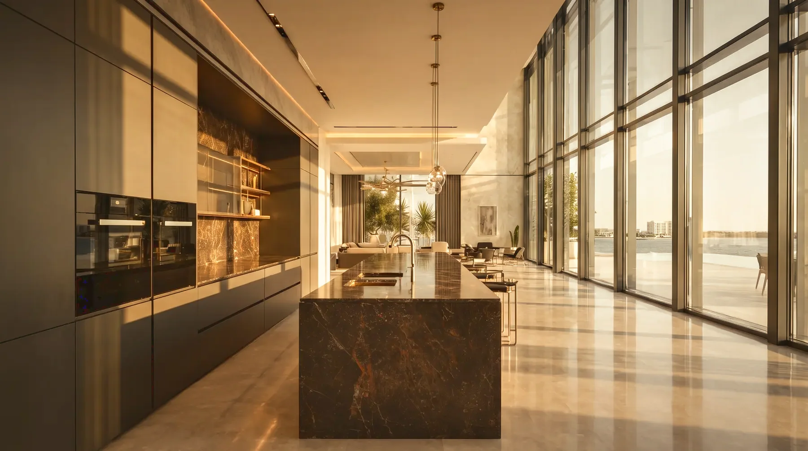
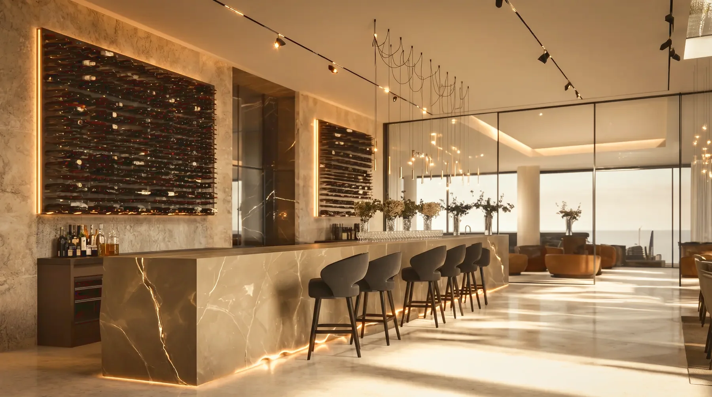
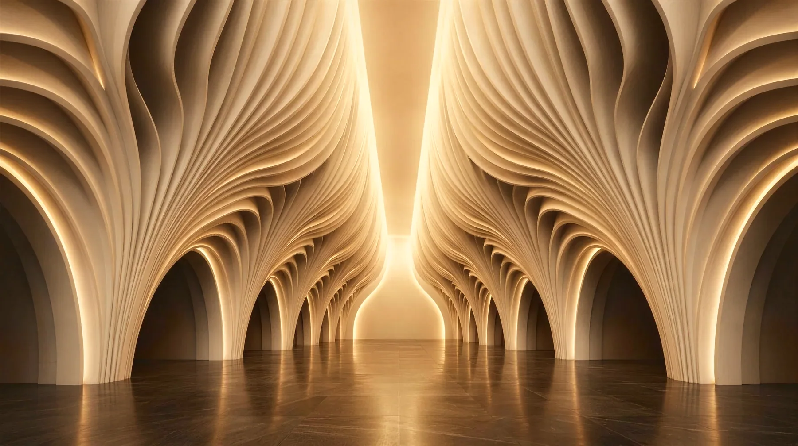
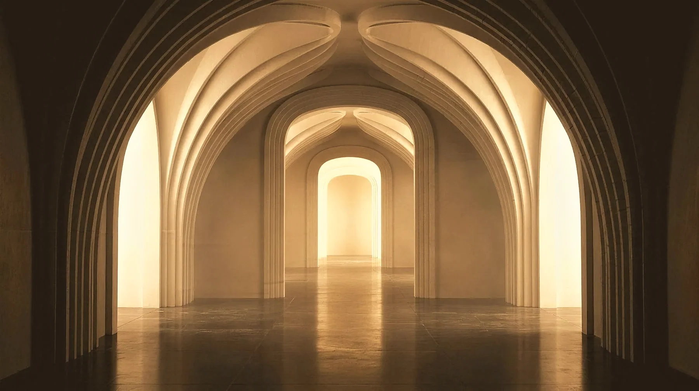

01
View project
KK Villa
Residential / Full turnkeyAward-winning
Residential commissions, transformations of existing properties, hospitality and commercial interiors, and concepts — in the UAE and internationally.
09 projects · Dubai and abroad

Residential / Full turnkeyAward-winning

Residential / Full turnkeyConceptsAward-winning

Residential / Full turnkeyInternational

TransformationsResidential / Full turnkey

Hospitality / Commercial

TransformationsResidential / Full turnkeyInternational

Hospitality / CommercialInternational

Concepts

Concepts
Tell us what you’re planning, where it is and what you want to achieve.
Start a project